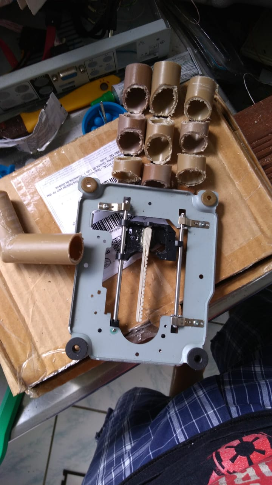
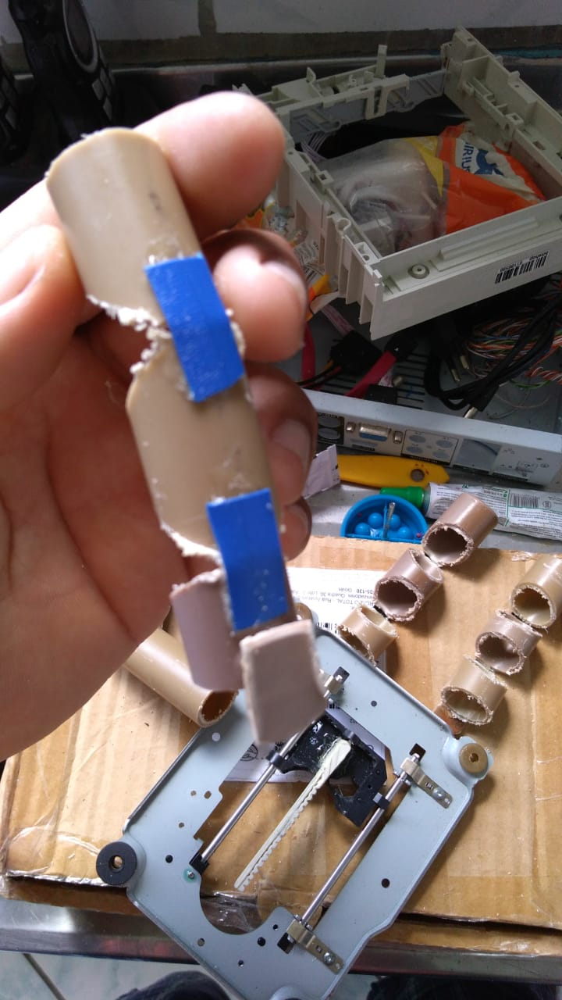
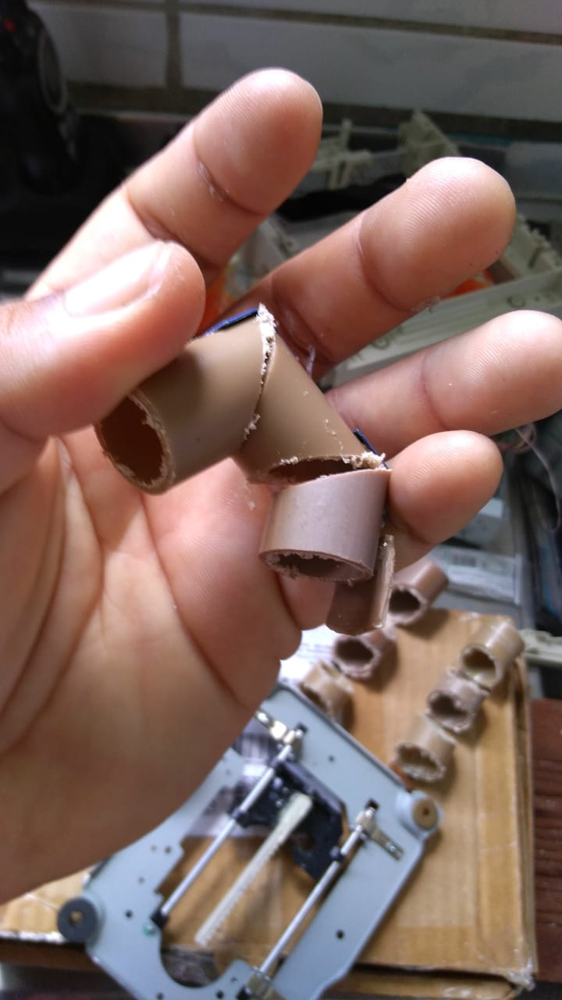
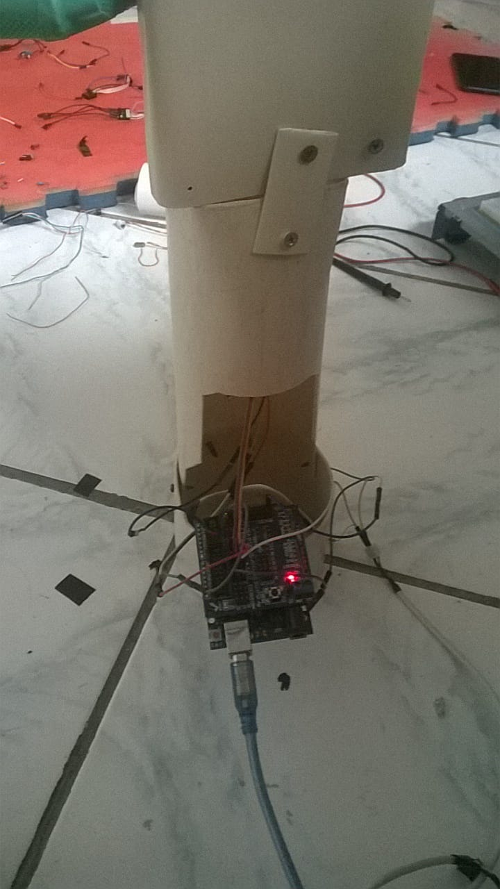
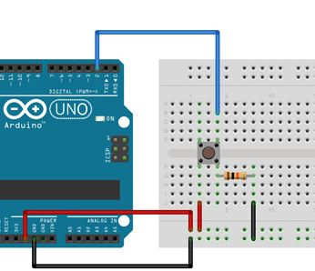
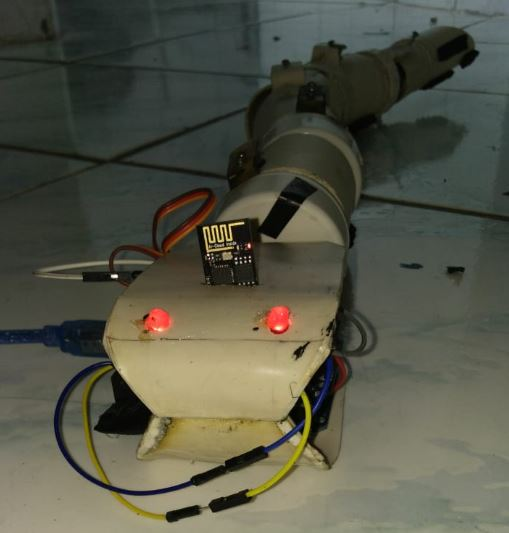
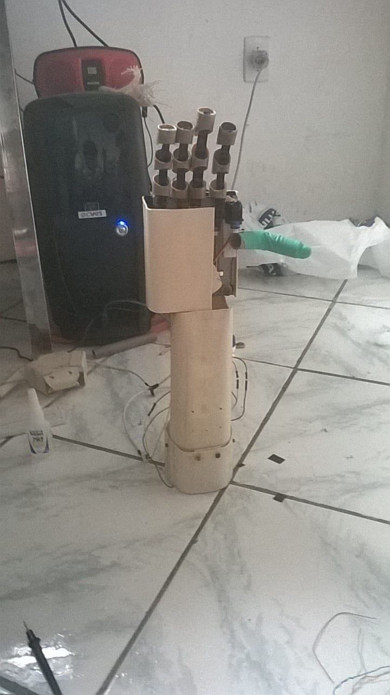
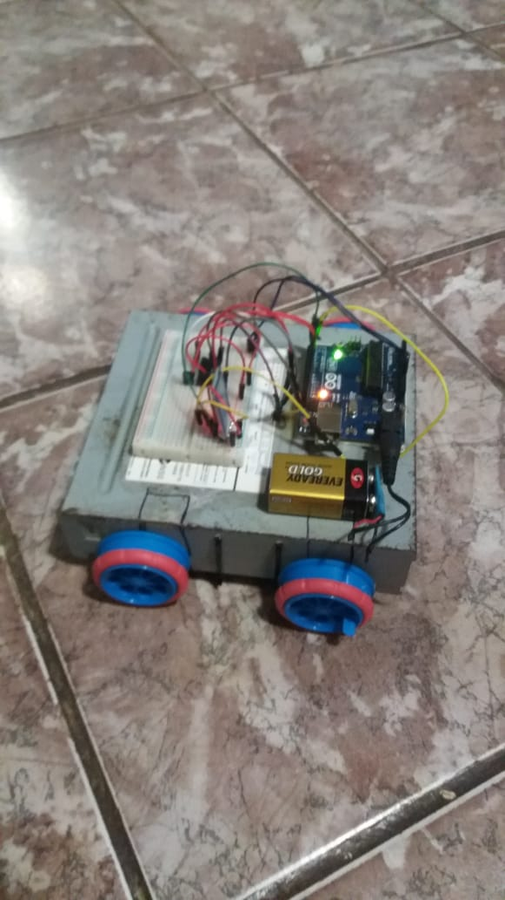

MÃO ROBÓTICA
Bem vindo a mais um projeto McGyverTronics

MÃO ROBÓTICA
Pesquisa e Desenvolvimento de uma Mão Robótica, Outubro 23, 2018
No dia-a-dia, convimemos com a diversidade e com muitas pessoas com dificuldades de locomoção, e(ou) com alguma deficiência. Baseado nessa premissa, pensamos em como incluir essas pessoas, possibilitando uma maior acessibilidade. Nosso ponta a pé inicial é a pesquisa e desenvolvimento de uma mão robótica humanóide, com funcionalidades similares a um membro real, para quue a própria pessoa possa controlar o seu membro robóticco. Para tal, estamos pesquisando conhecimentos das áreas de robótica, eletrônica, eletromiografia, neurologia e fisiologia de uma mão humana.Nesse primeiro protótipo só temos o controle dos quatro dedos e de um polegar opositor, e o movimento sendo controlado por um simples sensor de toque. Ao fim do desenvolvimento do projeto, espera-se que o próprio usuário possa controlar com seus impulsos elétricos gerados pelos seu cérebro e captados em seu nervo residual.
PROTOTIPAÇÃO
Tivemos bastante dificuldade em modelar a mão robótica e todas suas funcionalidades, principalmente com relação a fluidez do movimento para não sobrecarregar os servomotores. Quanto ao uso de materiais, tentamos modelar todo em PVC, baseado na experiência adquirida com o SnakeRobot, porém foi-se necessário utilizarmos a palma da mão com uma base metálica, para ter maior fixação, base essa retirada de um CD-ROM Drive. Os dedos foram todos modelados em PVC, baseado no brinquedo mão robótica da estrela. Abaixo seguem imagens da construção desse protótipo e do modelo que nos baseamos.



O CIRCUITO
O circuito utilizado na mão robótica até o momento é bem simples, pois não estamos ainda utilizando eletromiografia. A idéia no momento é utilizar um sensor mecânico com um botão que ao ser pressionado movimenta a mão fazendo-a fechar e abrir. Com relação ao drive para movimentar os servomotores, estamos utilizando a interface do próprio arduino com um shield para servomotor. Segue abaixo um descritivo do circuito.


ALGORÍTIMO
O algorítimo da mão também está relativamente simples, tendo em vista que estamos na fase inicial de P&D. Para tal temos apenas que pegar o sinal do botão quando o mesmo é pressionado, e a partir desse evento fazer a mão abrir e fechar. As variáveis são simples e não tem nenhuma característica de dificil compreensão para quem estiver começando e quiser construir sua própria mão. Segue abaixo o código da mão robótica.


McGyverTronics
Equipe de Robótica e Desenvolvimento em IOT
Popular Posts
-

SnakeRobot
-

Mão Robótica
-

Robô de Inspeção
Tags
Robótica SnakeRobot Cultura_Maker McGyverTronics Brazil DIY